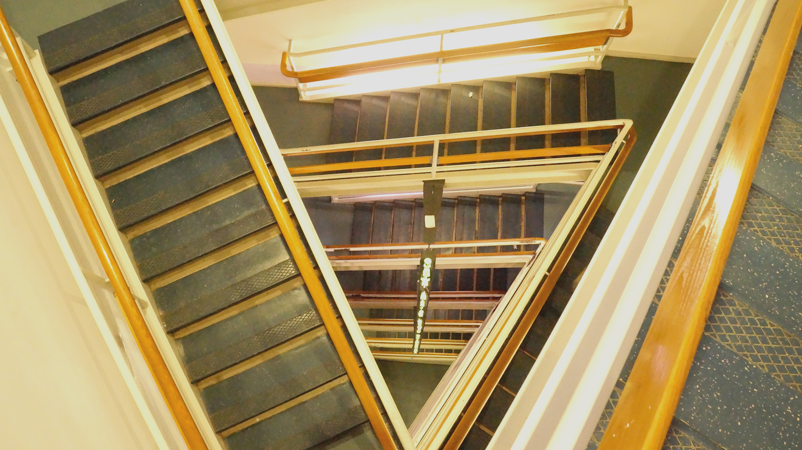

Back to Home Page. | Next: Image 2

I chose this photo because I have always loved spiral staircases, and this one felt like a shot I could not let get away. The repeating lines pull your eye downward through the frame, and the curve creates rhythm and movement even though the image is still. I like that it is not perfectly centered, because the slight imbalance shows the real structure and gives it depth, like you are looking into levels instead of a flat pattern. In Photoshop, I focused on making the forms clearer and strengthening the contrast so the staircase reads as layers, not noise. If I had a monopod, an extension pole, or a drone, I could have captured a more centered perspective, but I actually like the imperfection because it emphasizes scale and makes the viewer feel the drop.